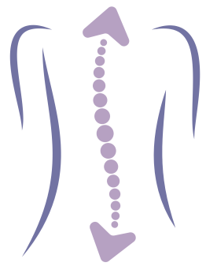
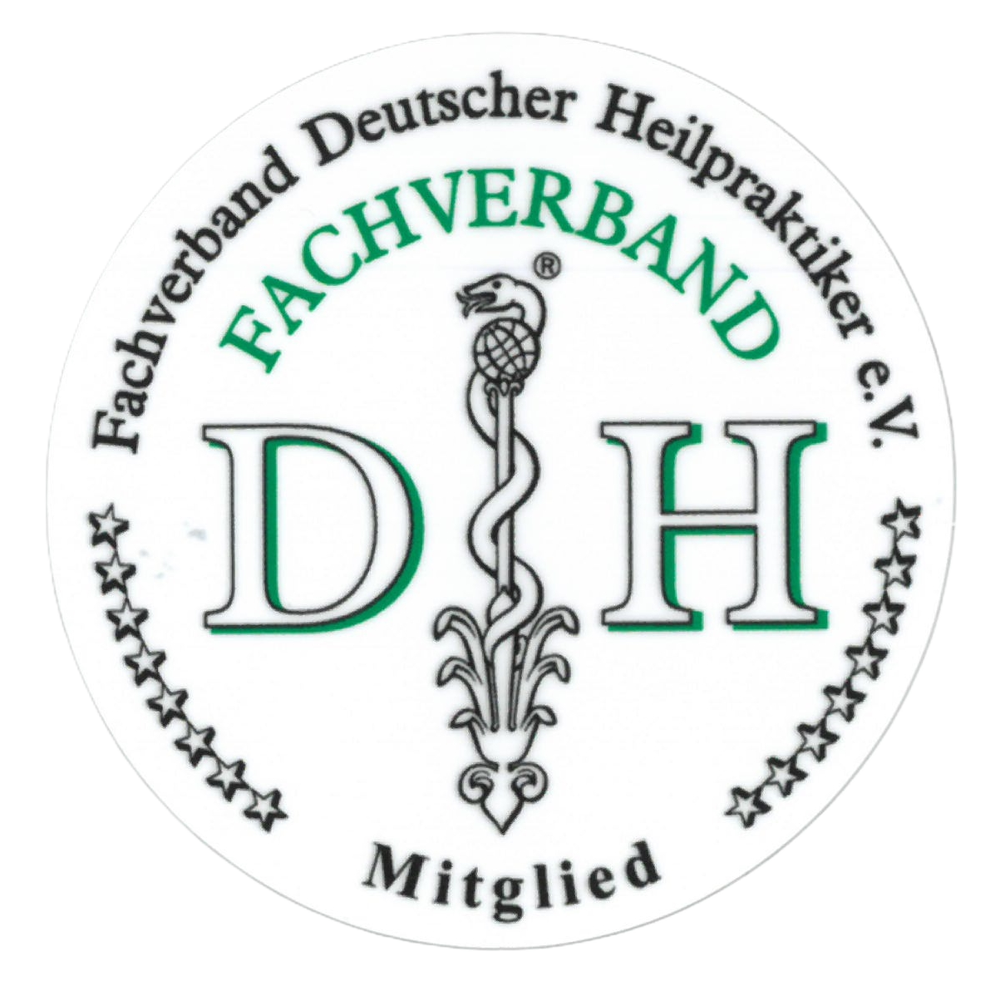

Rücken, Stress oder Erschöpfung belasten Dich im Alltag? Ich kenne das. Aus eigener Erfahrung weiß ich, wie viel Kraft es kostet. Ich zeige Dir in Ruhe, wie Du Deinen Körper besser kennenlernst und ihn Schritt für Schritt im Alltag stärken kannst.
Termine nach Vereinbarung. Du erreichst mich per Mail unter kontakt@lenafistler.de.
